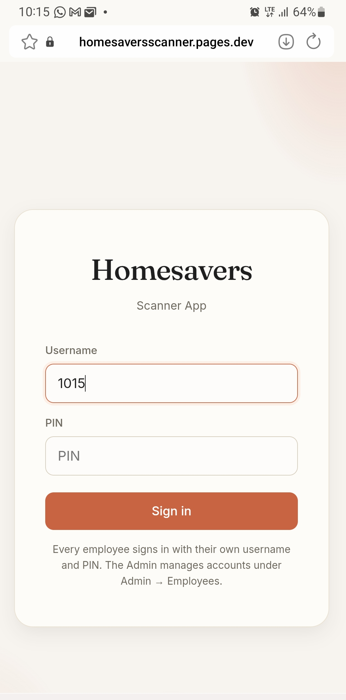
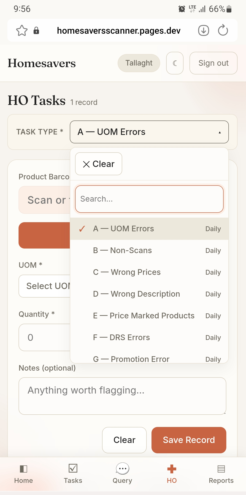
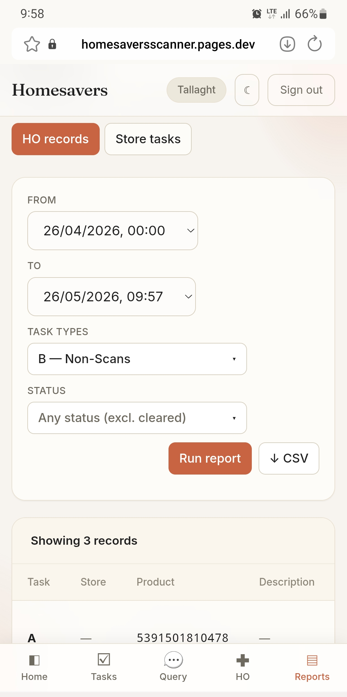
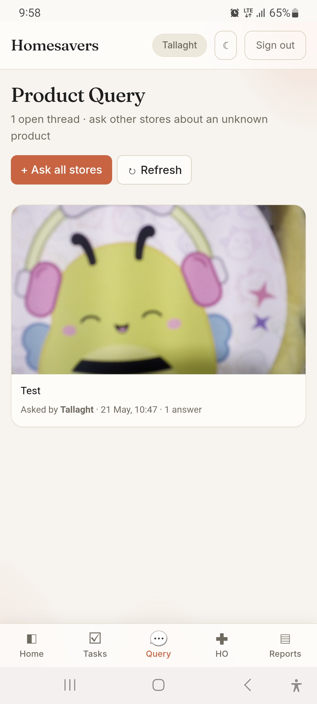

1015).
| Menu | What it's for |
|---|---|
| HO Tasks | Report a problem with a product (Non Scans, Wrong Price, Wrong Description, Department Checks, etc.). |
| Reports | View and track all the records you have logged. |
| Product Query | Ask other stores about a product you don't recognise. |

The product description and supplier fill in automatically when you scan — you only enter what's listed below.
| Task | Use it when… & what to fill |
|---|---|
| Price Check | Check or confirm a product's selling price and department. Scan and save — description, selling price and department fill in automatically. |
| Department Check | Confirm which department a product belongs to. Scan and save — the department fills in automatically (nothing else to enter). |
| Non-Scans | Till can't scan the barcode (beeps red or "item not found"). Enter a description and take 2 photos: product + barcode. |
| Wrong Prices | Shelf price and till price disagree. Pick a reason code; add the current price if you know it. |
| Wrong Description | Till/SEL name doesn't match the product (wrong, misspelled, foreign language). Enter the name exactly as printed on the item. |
| UOM Errors | Shelf-label unit is wrong (e.g. says "each" but it's a 6-pack). Pick the correct UOM and quantity. |
| Price Marked Products | Printed price on the pack differs from the till. Choose the currency (£/€) and enter the marked price. |
| DRS Errors | Wrong deposit charge. Check the Return Logo is on the product first. Enter the size and number of products in a unit — the deposit is calculated for you. |
| Promotion Error | A promotion (2-for-€5, BOGOF, etc.) isn't applying at the till. Enter the promotion description and price. |
| Stock Count (once-off) | Recording how many units are on the shop floor — usually when HO asks. Enter the shop-floor count. |
| Miscellaneous (once-off) | Anything that doesn't fit the others — add a clear note. |
| Status | Meaning | What you do |
|---|---|---|
| Pending | Waiting for Head Office. | Nothing — wait. |
| Completed by HO | HO has fixed it. | Check the till, then tap ✓ Clear. |
| Clear | You've confirmed the fix. | Done — it leaves your list. |
Use Reports to view and track everything your store has logged — past and present.

For a product with no barcode, or one nobody recognises — ask the whole chain.

Keep working. Records save on the device and upload when you're back online. You'll see "Saved offline — will sync."
| Problem | Fix |
|---|---|
| "Username or PIN doesn't match" | Check Caps Lock; ask your manager to reset your PIN. |
| Wrong store in the top badge | Sign out and sign in again. Don't log anything until it's right. |
| List looks empty | Tap All on the Status filter to clear it. |
| Scanned barcode doesn't fill the description | Type the description in manually. The product may not be in the system yet. |
| Record keeps showing as Completed by HO | Check the fix at the till, then tap ✓ Clear. |